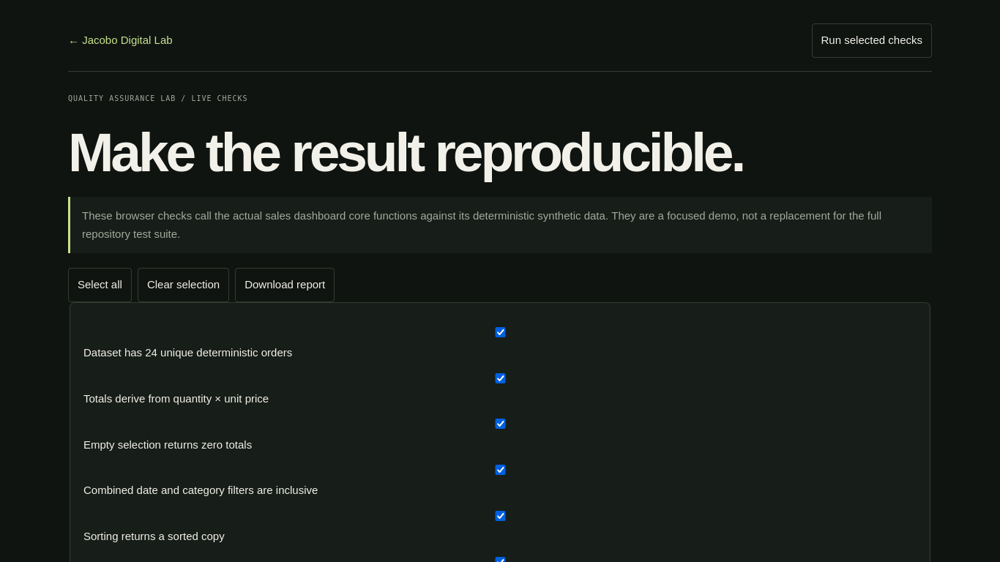

PROJECT CASE STUDY
Quality Assurance Lab
Run a small reproducible check suite
Select deterministic cases, run the checks against real dashboard calculation functions, and download a text report.

Open live demo ↗01 / PROBLEM
Problem: give reviewers reproducible evidence for small software changes.
02 / OBJECTIVE
Objective: exercise plan, positive/negative checks and a report.
03 / SOLUTION
Solution: browser test runner using actual sales-dashboard core functions and synthetic fixtures.
04 / ARCHITECTURE
Architecture: static page loads the same dashboard core/data files.
05 / IMPLEMENTATION
Implementation: six selectable checks for aggregates, filters, sorting, CSV escaping and empty state.
06 / TESTING
Testing: each selected assertion runs in-browser and results are visible/downloadable.
07 / LIMITATIONS & ROADMAP
Limitations & roadmap: this is a focused browser adaptation, not the full repository suite or cross-browser automation.
08 / ACCESS
Access: live runner, source repository and QA documentation.